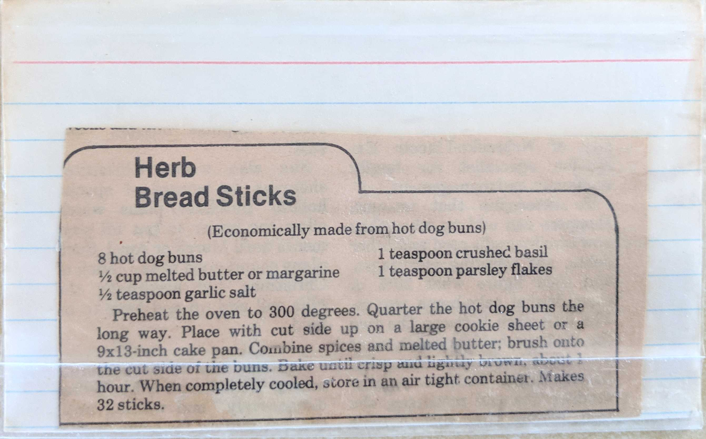

Herb Bread Sticks
(Economically made from hot dog buns)
8 hot dog buns
1 teaspoon crushed basil
1/2 cup melted butter or margarine
1 teaspoon parsley flakes
1/2 teaspoon garlic salt
Preheat the oven to 300 degrees. Quarter the hot dog buns the long way. Place with cut side up on a large
cookie sheet or 9x13-inch cake pan. Combine spices and melted butter; brush onto the cut side of the buns.
Bake until crisp and lightly brown, about 1 hour. When completely cooled, store in an air tight container.
Makes 32 sticks.